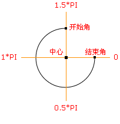

HTML5 canvas arc() 方法
实例
创建一个圆形：
JavaScript:
var c=document.getElementById("myCanvas");
var ctx=c.getContext("2d");
ctx.beginPath();
ctx.arc(100,75,50,0,2*Math.PI);
ctx.stroke();
定义和用法
arc() 方法创建弧/曲线（用于创建圆或部分圆）。
提示：如需通过 arc() 来创建圆，请把起始角设置为 0，结束角设置为 2*Math.PI。
提示：请使用 stroke() 或 fill() 方法在画布上绘制实际的弧。
- 中心：arc(100,75,50,0*Math.PI,1.5*Math.PI)
- 起始角：arc(100,75,50,0,1.5*Math.PI)
- 结束角：arc(100,75,50,0*Math.PI,1.5*Math.PI)
JavaScript 语法：
context.arc(x,y,r,sAngle,eAngle,counterclockwise);
参数值
| 参数 | 描述 |
|---|---|
| x | 圆的中心的 x 坐标。 |
| y | 圆的中心的 y 坐标。 |
| r | 圆的半径。 |
| sAngle | 起始角，以弧度计。（弧的圆形的三点钟位置是 0 度）。 |
| eAngle | 结束角，以弧度计。 |
| counterclockwise | 可选。规定应该逆时针还是顺时针绘图。False = 顺时针，true = 逆时针。 |